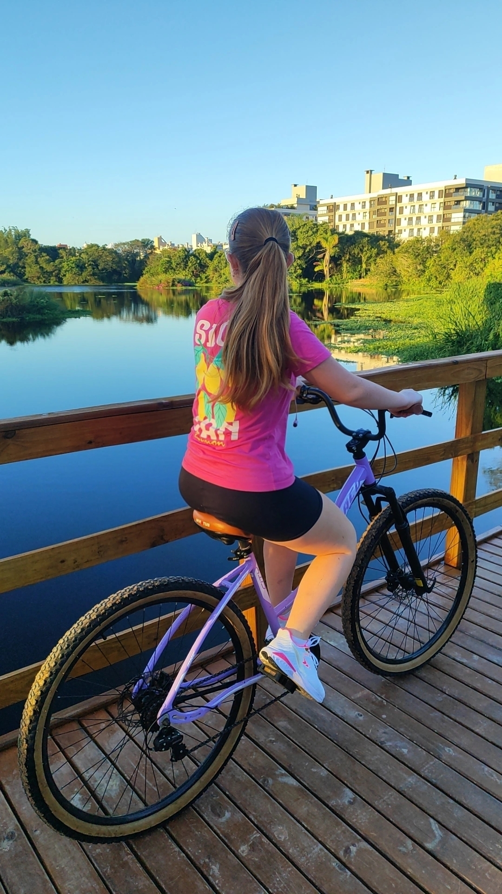
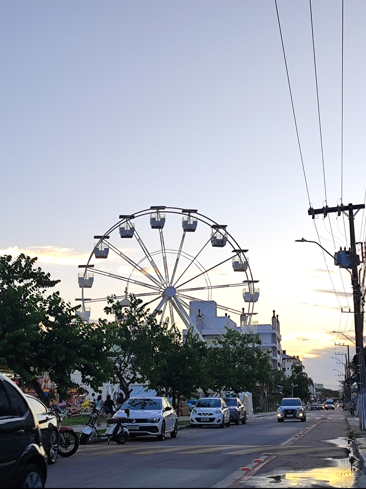
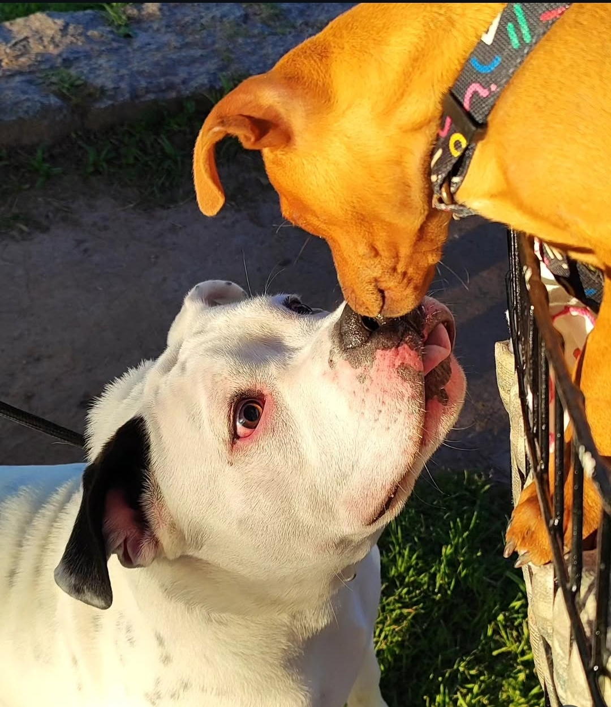
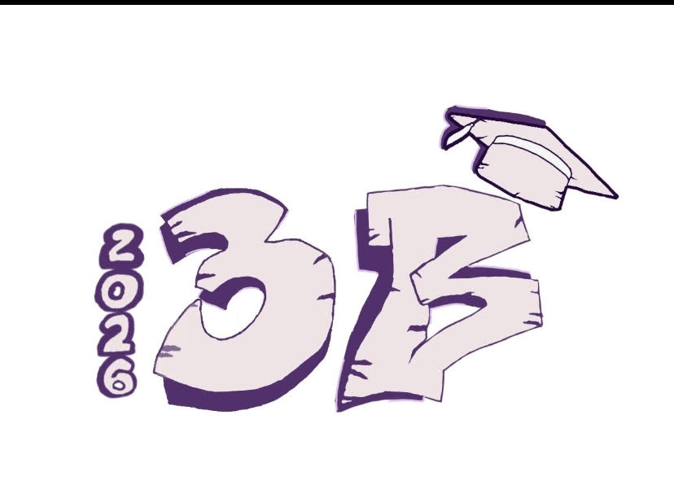

🦋
💜
Um pouco sobre mim
Oii, eu sou a Isabella, tenho 17 anos e seja bem vindo(a) ao meu portfólio!
Esse portfólio é bem especial, pois ele será o meu último portfólio escolar, é nele que eu vou colocar minhas atividades e projetos durante o ano. Ele vai ser muito mais do que uma coleção de trabalhos; ele será o registro da minha constante evolução.
No curso de Desenvolvimento de Sistemas, aprendi e estou aprendendo a lidar com a lógica e os códigos, mas a escola também tem sido o lugar onde trabalho o meu desenvolvimento pessoal.
Entre um desafio e outro, estou aprendendo sobre disciplina, resiliência e como me tornar uma pessoa mais organizada e preparada para o meu grande futuro.